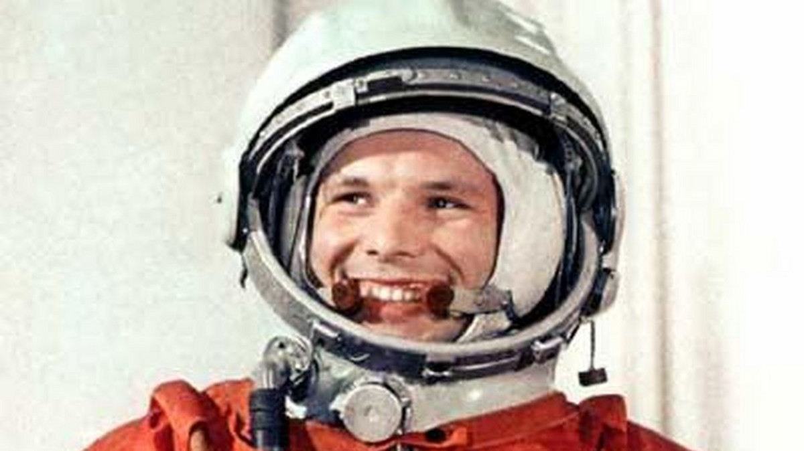
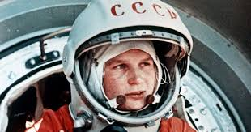

Jurij Gagarin
Pierwszy człowiek w kosmosie, w 1961 roku, reprezentował Związek Radziecki podczas historycznego lotu Wostok 1.

Neil Armstrong
Pierwszy człowiek, który postawił stopę na Księżycu, dowódca misji Apollo 11 w 1969 roku.

Valentina Tierieszkowa
Pierwsza kobieta w kosmosie, która poleciała w misji Wostok 6 w 1963 roku.